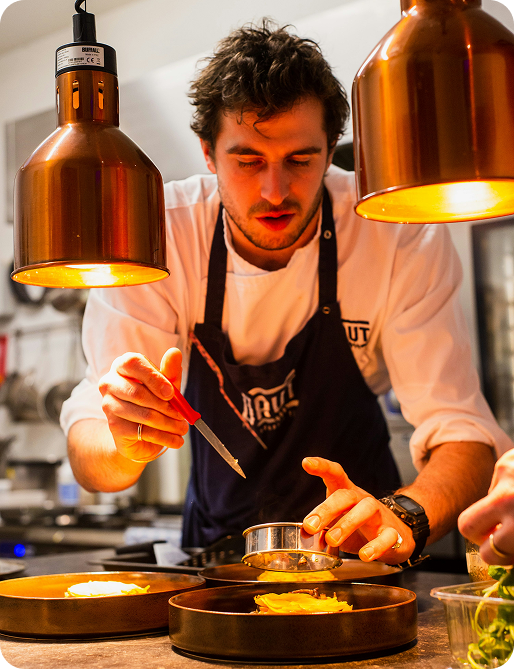

À frente da nossa cozinha está o chef Ricardo Soler, apaixonado pela gastronomia desde cedo e com mais de 15 anos de experiência em restaurantes renomados no Brasil e no exterior. Sua jornada começou em uma pequena cozinha familiar, onde aprendeu o valor dos ingredientes frescos e das receitas preparadas com carinho.
Hoje, ele une técnicas refinadas da alta gastronomia com o sabor acolhedor da culinária tradicional, criando pratos que encantam pelo visual, pelo aroma e, principalmente, pelo sabor. Cada criação carrega sua assinatura única, sempre priorizando qualidade, inovação e a satisfação de cada cliente.